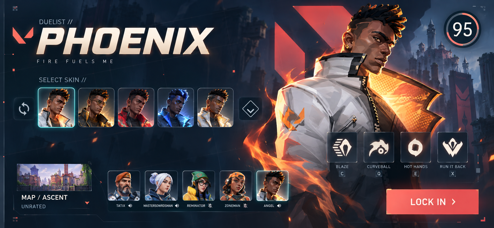
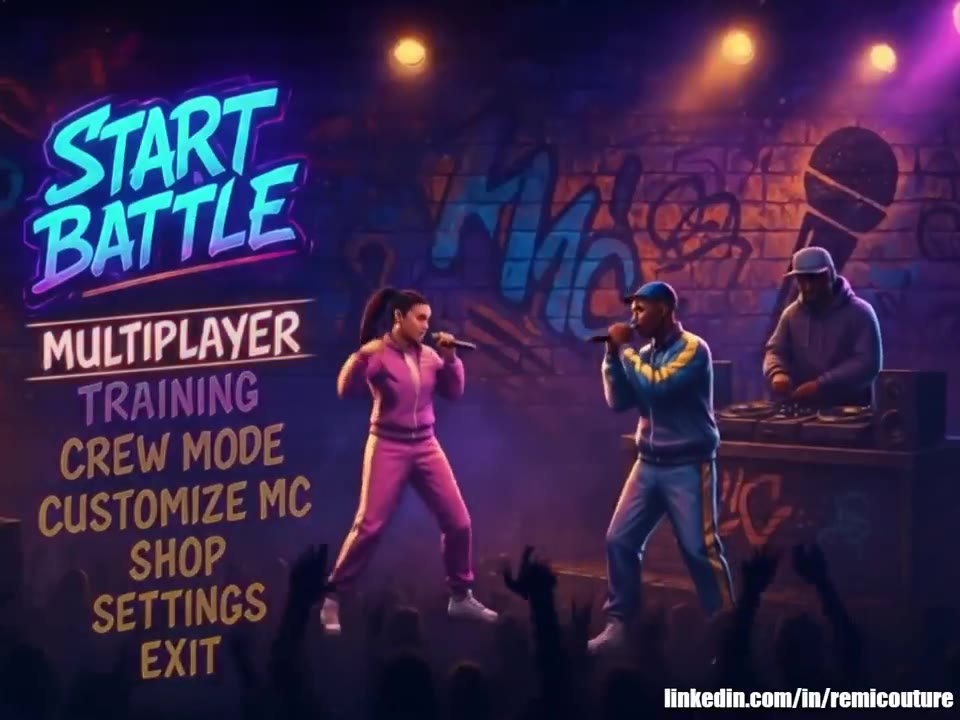

THE PORTFOLIO / UI + UX
Different ways
to see the work.
Start with the thinking, browse the visuals, or settle into the full collection. Choose the view that fits what you’re looking for.
NEW / PRODUCT UI & UX / 2026
Trust the next step.
Build the next skill.
Fintech that makes the commitment clear. Cybersecurity learning that makes the reasoning stick. Two new concept studies connecting polished product interfaces with the decisions, feedback, and recovery behind them.
Independent portfolio concepts · 2026
Inspired by prior experience. Fictional products and sample data.
NEW / SPORTS UI & UX / 2026
Matchday energy.
Clear player decisions.
Two sports. Four screens. A study in cinematic UI art and the decisions behind team preparation—from a hockey line swap to a soccer lineup that needs one more player.
Independent AI-assisted concept study · Fictional clubs & athletes
Inspired by AAA sports presentation. Not commissioned or endorsed by EA.
FEATURED / SQUAD
Faction identity.
Every detail connected.
Your faction, your equipment, your next decision. Explore the original customization design and three new companion concepts built around the same military visual language.
Original: 2022–2025 studio period
Companion concepts & UX walkthrough: 2026

START HERE · SELECTED WORKSee the work.
Explore the thinking.
Eleven curated collections with original screens, UX walkthroughs, playable concepts, and before-and-after visual refinements.
Explore selected work



Follow your curiosity.
Scan project cards, filter by discipline, and open the work that catches your eye. A visual overview for exploring at your own pace.
Browse the gallery THE FULL COLLECTION
THE FULL COLLECTIONTake the longer look.
A full-screen sequence of game interfaces, motion studies, and work from the archive. Browse the full collection one screen at a time.
Play the slideshowLooking for something specific?
Jump straight into the guided showcase.
Crypto wallet, exchange, and transaction UX.
Cybersecurity · Signal ↗Gamified learning, practice labs, and feedback.
SQUAD conceptsMilitary customization, faction identity, and matching 2026 companion concepts.
UX & player journeysFlows, decisions, recovery paths, and the structure behind the screens.
Game UI & visual craft2020–2021 layouts alongside their 2026 color refinements.
Motion & atmosphereMenus, inventory, and worlds brought into motion.